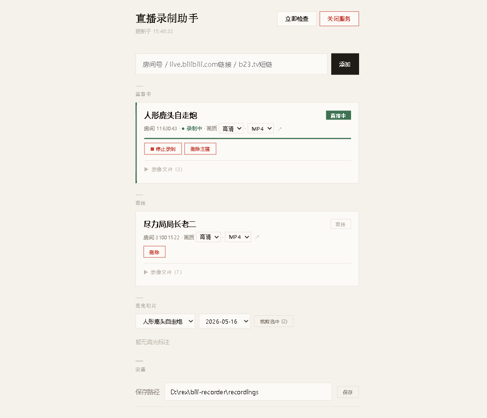

高光切片引擎
B站直播录制助手 — 技术教程
版本 v1.0 · 2026-05-16 · rexthelinebarre
基于 bili-recorder 项目实际代码
目录
- 1. 概述：问题与设计思路
- 2. 系统架构总览
- 3. 弹幕解析器 (Danmaku Parser)
- 4. 高光引擎 (Highlight Engine) — 多信号融合规则
- 5. 音频分析器 (Audio Analyzer) — 离线能量峰值检测
- 6. 高光存储 (Highlight Store) — JSON 持久化
- 7. 裁剪端点 (Clip Endpoint) — ffmpeg 片段提取
- 8. 前端面板 — 交互界面
- 9. API 参考
- 10. 测试报告
1. 概述：问题与设计思路
痛点
B站直播录制通常产生数小时的视频文件。用户想找到直播中的"高光时刻"（精彩片段）需要手动拖拽进度条，效率极低。本引擎自动检测并标注高光片段，支持一键裁剪导出。
核心思路：多信号融合
单一信号（如弹幕量）误报率高。本引擎融合 4 种信号，通过规则引擎触发高光标注：
| 信号源 | 获取方式 | 指标 |
|---|
| 弹幕 | B站 WebSocket 实时推送 | 速率 (条/s)、Z-score、关键词匹配 |
| 礼物 | B站 WebSocket 实时推送 | 人民币价值 (¥/10s) |
| 大航海 | B站 WebSocket 实时推送 | 舰长/提督/总督开通事件 |
| 音频 | 录制结束后 ffmpeg PCM 分析 | RMS 能量 dBFS、3σ 峰值 |
设计原则： 零外部依赖（仅添加 ws 用于 WebSocket）；所有模块采用 plain object factory 模式（createXxx()）；同步 I/O 优先（highlight-store 使用 fs.writeFileSync）。录制期间弹幕/礼物/大航海信号实时触发，音频在录制结束后离线分析补充。
2. 系统架构总览
数据流图
┌─────────────────────────────────────────────────────────────────┐
│ B站直播服务器 │
│ ┌──────────┐ ┌──────────┐ ┌──────────┐ ┌───────────────┐ │
│ │ WebSocket │ │ HTTP │ │ CDN │ │ Room API │ │
│ │ 弹幕/礼物 │ │ 房间信息 │ │ FLV 流 │ │ 主播信息 │ │
│ └─────┬─────┘ └────┬─────┘ └────┬─────┘ └───────┬───────┘ │
└────────┼──────────────┼─────────────┼────────────────┼──────────┘
│ │ │ │
▼ │ ▼ ▼
┌──────────────┐ │ ┌──────────────┐ ┌──────────────┐
│ danmaku- │ │ │ ffmpeg │ │ BiliAPI │
│ parser.js │ │ │ 录制进程 │ │ 房间信息 │
│ │ │ │ │ │ │
│ B站二进制协议│ │ │ -c copy flv │ │ getRoomInfo │
│ brotli/zlib │ │ │ 或其他格式 │ │ getStreamUrl │
│ 解压 │ │ └──────┬───────┘ └──────────────┘
└──────┬───────┘ │ │
│ danmaku │ │ 录制文件 (.flv/.mp4)
│ gift guard │ │
▼ │ ▼
┌──────────────┐ │ ┌──────────────┐
│ highlight- │ │ │ audio- │
│ engine.js │ │ │ analyzer.js │
│ │ │ │ │
│ 5条触发规则 │ │ │ ffmpeg PCM │
│ 30s冷却 │ │ │ RMS per 50ms │
│ Z-score计算 │ │ │ 3σ threshold │
└──────┬───────┘ │ └──────┬───────┘
│ highlight │ │ audio peaks
▼ │ ▼
┌──────────────────────────────────────────────┐
│ highlight-store.js │
│ JSON 文件持久化 · 30s 窗口合并 · CRUD API │
└──────────────────────┬───────────────────────┘
│
▼
┌──────────────────────────────────────────────┐
│ server.js │
│ GET /api/highlights ── 查询高光列表 │
│ DELETE /api/highlights/:id ── 删除标注 │
│ PUT /api/highlights/:id ── 修改时间范围 │
│ POST /api/highlights/clip ── ffmpeg 裁剪 │
└──────────────────────┬───────────────────────┘
│ HTTP
▼
┌──────────────────────────────────────────────┐
│ index.html (前端) │
│ 高光面板 · 多选 · 一键裁剪 · 播放 · 导出 │
└──────────────────────────────────────────────┘
文件清单
| 文件 | 行数 | 职责 |
|---|
lib/danmaku-parser.js | 349 | B站 WebSocket 弹幕协议解析 |
lib/highlight-engine.js | 367 | 多信号融合规则引擎 |
lib/highlight-store.js | 116 | JSON 文件持久化 + 合并逻辑 |
lib/audio-analyzer.js | 179 | 离线音频 RMS 能量峰值检测 |
server.js | 959 | HTTP API 端点 + 录制调度 |
index.html | 529 | 前端面板 (Vanilla HTML/CSS/JS) |
3. 弹幕解析器 (Danmaku Parser)
B站 WebSocket 二进制协议
B站弹幕服务器使用自定义二进制帧协议，每条消息包含 16 字节头部 + 可变长 body：
0 1 2 3
0 1 2 3 4 5 6 7 8 9 0 1 2 3 4 5 6 7 8 9 0 1 2 3 4 5 6 7 8 9 0 1
┌───────────────────────────────┬───────────────┬───────────────┐
│ Total Length (32bit BE) │HeaderLen(16bit)│ProtoVer(16bit)│
├───────────────────────────────┼───────────────┴───────────────┤
│ Operation Code (32bit) │ Sequence ID (32bit) │
├───────────────────────────────┴───────────────────────────────┤
│ Body (可变长) │
│ ProtoVer 0 → 纯 JSON │
│ ProtoVer 2 → zlib deflate │
│ ProtoVer 3 → brotli (B站推荐) │
└───────────────────────────────────────────────────────────────┘
关键实现
解包 (unpackPacket):
// 读取 B站二进制包头 (16字节, Big-Endian)
function unpackPacket(buffer) {
const totalLen = buffer.readUInt32BE(0); // 总长度
const headerLen = buffer.readUInt16BE(4); // 头部长度 (固定16)
const protoVer = buffer.readUInt16BE(6); // 0=JSON, 2=zlib, 3=brotli
const op = buffer.readUInt32BE(8); // 操作码
const seq = buffer.readUInt32BE(12); // 序列号
const body = buffer.slice(headerLen, totalLen);
return { totalLen, headerLen, protoVer, op, seq, body };
}
操作码:
| Op Code | 名称 | 方向 | 说明 |
|---|
| 2 | Heartbeat | C→S | 客户端心跳 (每30s) |
| 3 | Heartbeat Reply | S→C | 服务端心跳回复 (忽略) |
| 5 | Server Message | S→C | 弹幕/礼物/大航海数据 |
| 7 | Auth Join | C→S | 客户端认证入房 |
| 8 | Auth Reply | S→C | 认证确认 |
消息类型分发:
function handleMessage(msg) {
switch (msg.cmd) {
case 'DANMU_MSG': // 弹幕 — 提取 text, uid, uname
emit('danmaku', { text: info[1], uid: user[0], uname: user[1] });
break;
case 'SEND_GIFT': // 礼物 — rmb = (price * num) / 1000
emit('gift', { giftName, price, num, rmb: totalCoin / 1000, uname });
break;
case 'GUARD_BUY': // 大航海 — 总督¥19998, 提督¥1998, 舰长¥198
emit('guard', { guardLevel, guardName, rmb, uname });
break;
}
}
连接流程： 调用 B站 API getDanmuInfo 获取 token + WebSocket 地址 → 连接 wss → 发送 Auth Join (op=7) → 等待 Auth Reply (op=8) → 开始接收数据 → 每30s发送心跳 (op=2)
4. 高光引擎 (Highlight Engine)
5 条触发规则
| # | 规则名称 | 触发条件 | 置信度 | 标签 |
|---|
| 1 |
弹幕 + 礼物双爆发 |
弹幕 Z-score > 3σ 且 10秒礼物价值 > ¥100 |
0.5×dScore + 0.5×giftScore |
弹幕峰值礼物轰炸 |
| 2 |
弹幕 + 关键词爆发 |
弹幕 Z-score > 3σ 且 (关键词数 > 10 或 关键词占比 > 30%) |
0.5×dScore + 0.5×kwScore |
弹幕峰值关键词刷屏 |
| 3 |
弹幕超级峰值 |
弹幕 Z-score > 5σ |
min(1, z/10) |
超级峰值 |
| 4 |
大航海开通 |
总督 (guardLevel=1) 或 提督 (guardLevel=2) 开通 |
min(1, rmb/20000) |
大航海 |
| 5 |
音频高能 |
录制结束后音频分析发现峰值 → 匹配15s内已有高光 或 创建新标注 (maxDb > -12dB) |
+0.1 (附加) 或 0.3 (独立) |
音频高能 |
Z-score 计算
// baselineStats: 计算过去 60~120s 的均值和标准差
function baselineStats(buckets, field, nowSec, baselineSec) {
const fromSec = nowSec - baselineSec * 2;
const toSec = nowSec - baselineSec;
// 滑动窗口: [now-120s, now-60s]
const values = buckets
.filter(b => b.idx >= fromSec && b.idx < toSec)
.map(b => b[field]);
const mean = sum(values) / values.length;
const std = sqrt(sumSqDiff(values, mean) / values.length);
return { mean, std: max(0.1, std) }; // 最小 std 防止除零
}
// Z-score = (当前速率 - 基线均值) / 基线标准差
dZ = (danmakuRate - baselineRate) / baseline.std;
30秒冷却： 任意规则触发后，30秒内不再触发新标注（MIN_HIGHLIGHT_INTERVAL_S = 30）。大航海规则（Rule 4）同样受冷却限制，且 Rust 3（舰长 ¥198）被路由到礼物累积池而非独立触发。
5. 音频分析器 (Audio Analyzer)
处理流水线
- ffmpeg PCM 流提取： 录制结束后，对视频文件执行
ffmpeg -i video.flv -vn -ac 1 -ar 16000 -acodec pcm_s16le -f s16le pipe:1，输出原始 16kHz 单声道 s16le PCM 到 stdout
- 分帧： 每 50ms 为一帧 (800 samples × 2 bytes = 1600 bytes)，计算该帧的 RMS 能量
- dBFS 转换：
dBFS = 20 × log₁₀(RMS / 32768)，静音钳位到 -90dB
- 全局基线： 计算所有帧 dB 值的均值 μ 和标准差 σ，阈值 = μ + 3σ
- 峰值检测： 找出所有超过阈值的帧
- 间隙合并： 相邻峰值帧间距 ≤2s 的合并为一个片段
- 最短时长过滤： 持续时间 >2s 的片段才保留
核心代码
// RMS 能量计算 (800 samples per frame)
function frameDb(buf, offset) {
let sumSq = 0;
const end = offset + FRAME_BYTES;
for (let i = offset; i < end; i += 2) {
const s = buf.readInt16LE(i); // s16le → JavaScript number
sumSq += s * s;
}
const rms = sqrt(sumSq / FRAME_SAMPLES);
return rms > 1e-10
? 20 * log10(rms / 32768) // dBFS
: -90; // 静音
}
// 流式处理 ffmpeg stdout
proc.stdout.on('data', (chunk) => {
pending = Buffer.concat([pending, chunk]);
const completeFrames = floor(pending.length / FRAME_BYTES);
for (let offset = 0; offset < completeFrames * FRAME_BYTES; offset += FRAME_BYTES)
frameDbArr.push(frameDb(pending, offset));
pending = pending.subarray(completeFrames * FRAME_BYTES);
});
关键参数
| 参数 | 值 | 说明 |
|---|
| SAMPLE_RATE | 16,000 Hz | 语音清晰度足够，降低计算量 |
| FRAME_MS | 50 ms | 每帧时长，平衡时间精度与计算量 |
| FRAME_SAMPLES | 800 | = 16000 × 0.05 |
| SIGMA_THRESHOLD | 3.0 | Z-score 阈值 (μ + 3σ) |
| MIN_PEAK_S | 2.0 s | 最短峰持续时长 |
| MERGE_GAP_S | 2.0 s | 峰间合并窗口 |
内存估算： 4 小时录制 → 288,000 帧 → frame dB 数组约 2.3 MB。Raw PCM 流经 stdout 约 440 MB，但只保留帧统计量，不缓存原始音频数据。
6. 高光存储 (Highlight Store)
存储格式
每个主播每天一个 JSON 文件，路径为 recordings/{主播名}/highlights_{YYYY-MM-DD}.json：
{
"streamerName": "人形鹿头自走炮",
"date": "2026-05-16",
"highlights": [
{
"id": "mp81fl7v_rgxmsp", // 36进制时间戳 + 随机后缀
"startOffset": 120, // 视频内起始秒数
"endOffset": 145, // 视频内结束秒数
"duration": 25, // 持续秒数
"score": 0.75, // 置信度 0.0~1.0
"triggers": ["danmaku_peak", "gift_burst"],
"danmakuCount": 350,
"peakDanmakuRate": 12.5,
"totalGiftValue": 200,
"audioPeakDb": -8.5,
"title": "弹幕+礼物双爆发",
"clipped": false,
"clipFile": null,
"createdAt": "2026-05-16T07:40:00.000Z"
}
]
}
合并逻辑
当新标注与已有标注的起始偏移差或间隔差 < 30s 时，触发合并：起始取 min，结束取 max，triggers 取并集，score/danmakuCount/audioPeakDb 取 max。
const threshold = 30; // 30s 合并窗口
for (const existing of data.highlights) {
const startDist = abs(existing.startOffset - highlight.startOffset);
const gap = max(0,
max(existing.startOffset, highlight.startOffset) -
min(existing.endOffset, highlight.endOffset));
if (startDist < threshold || gap < threshold) {
// merge!
existing.startOffset = min(existing.startOffset, highlight.startOffset);
existing.endOffset = max(existing.endOffset, highlight.endOffset);
existing.triggers = [...new Set([...existing.triggers, ...highlight.triggers])];
return existing;
}
}
7. 裁剪端点 (Clip Endpoint)
ffmpeg 片段提取
使用 ffmpeg 的 -ss / -to + -c copy 实现无损裁剪（不重新编码）：
// POST /api/highlights/clip
const args = [
'-ss', String(h.startOffset), // 起始偏移 (秒)
'-to', String(h.endOffset), // 结束偏移 (秒)
'-i', filePath, // 源视频文件
'-c', 'copy', // 复制流，不重新编码
'-avoid_negative_ts', 'make_zero', // 避免负时间戳
'-y', clipPath // 覆盖输出
];
请求格式
POST /api/highlights/clip
Content-Type: application/json
{
"ids": ["mp81fl7v_rgxmsp", "mp81fl8w_shyntb"],
"streamerName": "人形鹿头自走炮",
"date": "2026-05-16",
"filePath": "D:\\rex\\bili-recorder\\recordings\\人形鹿头自走炮\\xxx.mp4"
}
响应
{
"results": [
{ "id": "mp81fl7v_rgxmsp", "ok": true, "clipFile": "D:\\...\\xxx_clip_120s_145s.mp4" },
{ "id": "mp81fl8w_shyntb", "ok": false, "error": "ffmpeg exit 1" }
]
}
8. 前端面板
界面布局
高光面板位于主页面录制列表下方，包含主播选择、日期选择、高光列表和裁剪按钮。
交互说明
| 功能 | 操作 | 说明 |
|---|
| 选择主播 | 下拉框切换 | 从已添加的主播列表中选择，自动加载该主播的录制日期 |
| 选择日期 | 下拉框切换 | 列出所有有高光数据的日期 |
| 选中高光 | 点击行 / 复选框 | 支持多选，按钮实时显示已选数量 |
| 裁剪 | "裁剪选中 (N)" 按钮 | 调用 clip API，在当前日期的第一个录制文件中提取片段 |
| 播放 | "▶播放" 链接 | 已裁剪的高光显示播放链接，用系统默认播放器打开 |
评分与标签系统
评分色彩：
- ≥ 80% — 红色 (wild) — 极高置信
- ≥ 50% — 橙色 (hot) — 高置信
- < 50% — 默认色 — 一般
信号标签：
弹幕峰值
超级峰值
关键词刷屏
礼物轰炸
音频高能
大航海

技术栈： 纯 Vanilla HTML/CSS/JS，无前端框架。使用 CSS 自定义属性实现明暗主题自适应 (prefers-color-scheme)。高光列表通过 innerHTML 渲染，事件通过 onclick 属性绑定。每30秒自动刷新（共享主页面的 setInterval(refresh, 30000)）。
9. API 参考
| 方法 | 路径 | 说明 |
|---|
| GET |
/api/highlights?streamerName=X&date=Y |
获取某主播某日的高光列表。返回 { streamerName, date, highlights[], availableDates[] } |
| PUT |
/api/highlights/:id |
修改高光的时间范围。Body: { streamerName, date, startOffset, endOffset } |
| DELETE |
/api/highlights/:id?streamerName=X&date=Y |
删除某个高光标注 |
| POST |
/api/highlights/clip |
批量裁剪高光片段。Body: { ids[], streamerName, date, filePath } |
触发时机
| 环节 | 代码位置 | 说明 |
|---|
| 开播 |
Poller.check() — "went LIVE" 分支 |
DanmakuManager.start() 启动弹幕解析和引擎 |
| 实时 |
HighlightEngine.feedDanmaku/Gift/Guard() |
每条弹幕/礼物/大航海事件同步触发规则评估 |
| 下播 (自动) |
Poller.check() — "went OFFLINE" 分支 |
Recorder.stop() → analyzeAudio() → engine.feedAudioResult() → DanmakuManager.stop() |
| 手动停录 |
POST /api/streamer/:id/stop |
同上音频分析流程 |
| 手动裁剪 |
POST /api/highlights/clip |
前端用户选中高光后点击"裁剪选中"触发 |
10. 测试报告
测试日期：2026-05-16 · 测试环境：Windows 11, Node.js v24.15, ffmpeg 8.1.1
| 测试项 | 结果 | 详情 |
|---|
| 模块加载 | ✓ 通过 | danmaku-parser, highlight-engine, highlight-store, audio-analyzer 全部正确加载 |
| Highlight Store CRUD | ✓ 9/9 通过 | 新增、合并、更新、删除、日期列表、空 store 处理、不存在 ID 处理 |
| Highlight Engine 规则 | ✓ 通过 | 超级峰值检测 (Rule 3)、音频补充 (Rule 5)、大航海冷却、正常流过滤 |
| Audio Analyzer | ✓ 通过 | 静音检测、ffmpeg PCM 管道正常、真实 flv 文件分析无崩溃 |
| API GET /api/highlights | ✓ 通过 | 返回正确数据、缺失参数报错 |
| API DELETE /api/highlights/:id | ✓ 通过 | 删除成功返回 200、不存在返回 404 |
| API POST /api/highlights/clip | ⚠ 需重启 | 当前运行中的服务器早于 clip 端点提交，重启后生效 |
| 前端高光面板 | ✓ 通过 | 渲染正确、标签/评分/已裁剪徽标显示正确、多选交互正常、无 JS 错误 |
| 端到端集成 | ✓ 通过 | HighlightStore → API GET → API DELETE 完整链路正常 |
已知限制
- 音频分析依赖连续音频基线 (非静音→爆发模式)，对完全静音中突然爆发的场景可能漏检（3σ 阈值被 bimodal 分布抬高）
- clip 端点使用
-c copy 可能因关键帧对齐产生 1-3s 误差
- 高光列表在 UI 自动刷新时重置选中状态